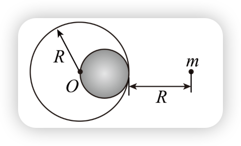
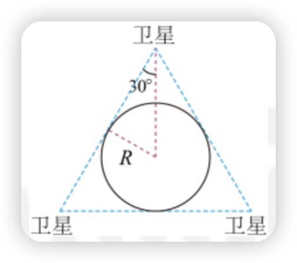
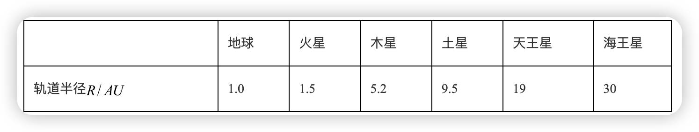

第七章 万有引力定律 复习与提高
A组
- 甲同学根据向心力公式 F = \frac{m v^2}{r} 说，如果人造地球卫星的质量不变，当轨道半径增大到 2 倍时，人造地球卫星需要的向心力为原来的 \frac{1}{2}；乙同学根据卫星的向心力是地球对它的引力，由公式 F = G \frac{Mm^2}{r^2} 推断，当轨道半径增大 2 倍时，人造地球卫星需要的向心力减少为原来的 \frac{1}{4}。哪位同学的看法对？说错的同学错在哪里？请说明理由。
【答案】 见详解
【详解】 乙同学的看法是对的。
甲同学的看法是错误的，根据万有引力提供向心力有： G \frac{Mm}{r^2} = m \frac{v^2}{r} 所以 v = \sqrt{\frac{GM}{r}} 当 r 增大 2 倍时，v 减小为原来的 \frac{1}{\sqrt{2}}。故甲同学根据 F = m \frac{v^2}{r} 判断的看法错误。
- 发射人造地球卫星时将卫星以一定的速度送入预定轨道。发射场一般选择在尽可能靠近赤道的地方。这样选址有什么优点？
【答案】 自转线速度最大，卫星越容易发射出去。
【详解】 相对于地心的发射速度等于相对于地面的发射速度加上地球自转的线速度。地球自转的线速度越大，相对于地心的发射速度越大，卫星越容易发射出去。赤道处，半径最大，由 v = r\omega 知自转线速度最大。
3．你所受太阳的引力是多大？和你所受地球的引力比较一下，可得出怎样的结论？已知太阳的质量是1.99\times 10^30kg，地球到太阳的距离为1.5\times 10^11m，设你的质量是60kg。
【答案】 人所受太阳的引力是 0.35N；地球对人的引力要比太阳对人的引力大一千六百多倍，平时计算时可以不考虑人受太阳的万有引力。
【详解】 地球半径为 6.4 \times 10^6 m ，与地球到太阳的距离 1.5 \times 10^{11} m 相比相差近 10 万倍，因此人距太阳的距离可以认为也是 1.5 \times 10^{11} m，故人受太阳的引力为 F = G \frac{Mm}{r^2} = 6.67 \times 10^{-11} \times \frac{1.99 \times 10^{30} \times 60}{(1.5 \times 10^{11})^2} = 0.35N 人受地球的引力为 F' = mg = 60 \times 9.8N = 588N 两个引力满足 \frac{F'}{F} = 1680 地球对人的引力要比太阳对人的引力大一千六百多倍，平时计算时可以不考虑人受太阳的万有引力。
4.地球质量大约是月球质量的81倍，一个飞行器在地球与月球之间。当地球对它的引力和月球对它的引力大小相等时，该飞行器距地心的距离与距月心的距离之比为多少？
【答案】 9：1
【详解】
设月球质量为M，地球质量就为81M。飞行器距地心距离为r_1，飞行器距月心距离为r_2。由于地球对它的引力和月球对它的引力相等，根据万有引力定律得：
\frac{81Mm}{r_1^2} = \frac{G M m}{r_2^2}
解得：
r_1 : r_2 = 9 : 1
5.海王星的质量是地球的17倍，它的半径是地球的4倍。绕海王星表面做圆周运动的宇宙飞船，其运行速度有多大？
【答案】
16.3km/s
【详解】
设地球质量为M，半径为R，卫星绕地球表面做圆周运动，万有引力提供向心力，由牛顿第二定律得：
G\frac{Mm}{R^2} = m\frac{v^2}{R}
解得：
v=\sqrt{\frac{GM}{R}}=7.9\text{km/s}
卫星绕海王星表面运动时满足万有引力提供向心力：
G\frac{17M \cdot m}{(4R)^2} = m\frac{v^2}{4R}
消去质量m并化简得：
v = \sqrt{\frac{17GM}{4R}} = \sqrt{\frac{G \times 17M}{4R}} = 16.3\text{km/s}
6.在月球上的宇航员，如果他已知引力常量和月球半径，且手头有一个已知质量为m的砝码。
（1）他怎样才能测出月球的质量，写出月球质量的表达式。
（2）他需要选用哪些实验器材。
【知识点】根据已知量计算出天体的质量
【答案】
(1) M = \frac{FR^{2}}{Gm}
(2) 弹簧测力计
【详解】
（1）在月球表面用弹簧秤称得质量m的砝码重为F，设月球表面的重力加速度为g。
依题意可得
F = mg \\
g = \frac{F}{m}
根据万有引力等于重力得
\frac{GMm}{R^{2}} = mg \\
M = \frac{FR^{2}}{Gm}
（2）由以上的分析可知，需要的器材是弹簧测力计。
- 某中子星的质量大约与太阳的质量相等，为2 \times 10^{30} \, \text{kg}，但是它的半径只有10 \, \text{km}。
- 求此中子星表面的自由落体加速度。
- 贴近中子星表面，求沿圆轨道运动的小卫星的速度。
【答案】
(1) 1.3 \times 10^{12} \, \text{m/s}^2；(2) 1.1 \times 10^{8} \, \text{m/s}
【详解】
(1) 星球表面重力与万有引力相等有：
mg = G\frac{mM}{R^{2}} \\
g = \frac{GM}{R^{2}}
代入数据计算得：
g = \frac{6.67 \times 10^{-11} \times 2 \times 10^{30}}{(10 \times 10^{3})^{2}} = 1.3 \times 10^{12} \, m/s^2
- 小卫星圆周运动满足万有引力提供向心力：
G\frac{mM}{R^{2}} = m\frac{v^{2}}{R} \\ v = \sqrt{\frac{GM}{R}} = \sqrt{\frac{6.67 \times 10^{-11} \times 2 \times 10^{30}}{10 \times 10^{3}}} = 1.1 \times 10^{8} \, m/s
B组
1．如果你站在月球上，能否用一把刻度尺和一块秒表估测月球的质量？如果能，请设计实验，并说出需要测量的数据和月球质量的计算式。已知月球的半径为R。
【知识点】 根据已知量计算出天体的质量
【答案】 能，下落的高度h和所需的时间t，\frac{2hR^2}{Gt^2}
【详解】 能估计测出月球的质量
在月球表面用让一重物做自由落体运动，用刻度尺测出下落的高度h，用秒表测量出下落的时间t，根据
h = \frac{1}{2} g t^2
求得月球表面的重力加速度，即
g = \frac{2h}{t^2}
根据万有引力等于重力得
\frac{GMm}{R^2} = mg
月球的质量
M = \frac{2hR^2}{Gt^2}
- 某行星的平均密度为 \rho，靠近该行星表面运行的卫星运转周期是 T，证明：\rho T^2 是一个常量，即对任何行星都相同。
【知识点】 计算中心天体的质量和密度
【答案】 见解析
【详解】
卫星贴近行星表面运行时，运动半径为 R，由万有引力提供向心力可知
\frac{Gm_{\text{行}} m}{R^2} = m \frac{4\pi^2 R}{T^2}
可得
m_{\text{行}} = \frac{4\pi^2 R^3}{GT^2}
将行星看作球体，设半径为 R，行星的平均密度为 \rho，则行星的质量为
m_{\text{行}} = \rho V = \rho \frac{4\pi R^3}{3}
由此可以解得
\rho T^2 = \frac{3\pi}{G}
式中 G 为万有引力常量，可见 \rho T^2 是一个对任何行星都相同的常量。
3.有一质量为M、半径为R、密度均匀的球体，在距离球心O为2R的地方有一质量为m的质点.现从M中挖去半径为\frac{1}{2}R的球体，如图所示，则剩余部分对m的万有引力F为多大？ 
【知识点】 万有引力的计算
【答案】
\frac{7GMm}{36R^2}
【详解】
质量为M的球体对质点m的万有引力
F_1 = G \frac{Mm}{(2R)^2} = G \frac{Mm}{4R^2}
挖去的球体的质量
M' = \frac{\frac{4}{3} \pi \left(\frac{R}{2} \right)^3}{\frac{4}{3} \pi R^3} M = \frac{M}{8}
质量为M'的球体对质点m的万有引力
F_2 = G \frac{M'm}{\left(R + \frac{R}{2} \right)^2} = G \frac{Mm}{18R^2}
则剩余部分对质点m的万有引力
F = F_1 - F_2 = G \frac{Mm}{4R^2} - G \frac{Mm}{18R^2} = \frac{7GMm}{36R^2}
4.利用三颗位置适当的地球同步卫星，可使地球赤道上任意两点之间保持无线电通信，目前地球同步卫星的轨道半径为地球半径的6.6倍。假设地球的自转周期变小，若仍仅用三颗同步卫星来实现上述目的，则地球自转周期的最小值约为多少小时？
【知识点】 同步卫星的运行中哪些量相同
【答案】 4h
【详解】
设地球的半径为R，则地球同步卫星的轨道半径为 r = 6.6R 已知地球的自转周期T = 24h，地球同步卫星的转动周期与地球的自转周期一致，若地球的自转周期变小，则同步卫星的转动周期变小，由
\frac{GMm}{R^2} = m \frac{4\pi^2}{T^2} R
可知，做圆周运动的半径越小，则运动周期越小。由于需要三颗卫星使地球赤道上任意两点之间保持无线电通讯，所以由几何关系可知三颗同步卫星的连线构成等边三角形并且三边与地球相切，如图

由几何关系可知地球同步卫星的轨道半径为
r' = 2R
由开普勒第三定律 \frac{r^3}{T^2}=k 得： T'=T\sqrt{\frac{r'^3}{r^3}}\approx4h
5.海边会发生潮汐现象，潮来时，水面升高；潮退时，水面降低。有人认为这是由于太阳对海水的引力变化以及月球对海水的引力变化所造成的。中午，太阳对海水的引力方向指向海平面上方；半夜，太阳对海水的引力方向指向海平面下方；拂晓和黄昏，太阳对海水的引力方向跟海平面平行。月球对海水的引力方向的变化也有类似情况。太阳、月球对某一区域海水引力的周期性变化，就引起了潮汐现象。
已知太阳质量为2.0 \times 10^{30} \text{kg}， 太阳与地球的距离为1.5 \times 10^8 \text{km}，月球质量为7.3 \times 10^{22} \text{kg}，月球与地球的距离为3.8 \times 10^5 \text{km} ，地球质量为6.0 \times 10^{24} \text{kg}，地球半径取6.4 \times 10^3 \text{km}。
请你估算一下：对同一片海水来说，太阳对海水的引力、月球对海水的引力，分别是海水重力的几分之一？
【知识点】 万有引力定律的内容、推导及适用范围
【答案】 \frac{1}{1098} \quad \frac{1}{2897656}
【详解】
在地球表面上，根据
G \frac{M_{\text{地}} m}{R_{\text{地}}^2} = mg
解得
g = \frac{GM_{\text{地}}}{R_{\text{地}}^2}
设海水的质量为m，太阳对海水的万有引力为
F_1 = G \frac{M_{\text{太阳}} m}{r_{\text{太阳}}^2}
月球对海水的万有引力为
F_2 = G \frac{M_{\text{月}} m}{r_{\text{月}}^2}
则太阳对海水的万有引力与海水重力之比为
\frac{F_1}{mg} = \frac{M_{\text{太阳}} R_{\text{地}}^2}{M_{\text{地}} r_{\text{太阳}}^2} = \frac{1}{1098}
月球对海水的万有引力与海水重力之比为
\frac{F_2}{mg} = \frac{M_{\text{月}} R_{\text{地}}^2}{M_{\text{地}} r_{\text{月}}^2} = \frac{1}{2897656}
6.太阳系各行星几乎在同一平面内沿同一方向绕太阳做圆周运动。当地球恰好运行到某地外行星和太阳之间，且三者几乎排成一条直线的现象，天文学称为“行星冲日”。已知地球及各地外行星绕太阳运动的轨道半径如下表所示。

根据题中信息，试计算木星相邻两次冲日的时间间隔，哪颗地外行星相邻两次冲日的时间间隔最短？
【卫星的追及相遇问题】
【答案】 1.1年，海王星
【详解】
根据开普勒第三定律，轨道半径的三次方与周期平方的比值相等，可得：
- 地球公转周期 T 最小
- 海王星公转周期 T' 最大
设地外行星周期为 T，地球周期为 T'，两次冲日间隔时间为 t，满足：
\frac{t}{T} - \frac{t}{T'} = 1
解得：
t = \frac{T}{1 - \frac{T'}{T}}
T 越大，t 越小，故海王星相邻两次冲日时间间隔最短。
木星轨道半径与地球的比值：
\frac{T'}{T} = \sqrt{\left(\frac{R'}{R}\right)^3} = 5.2\sqrt{5.2} \approx 11.86
假设 T=1 年，可得 t\approx 1.1年